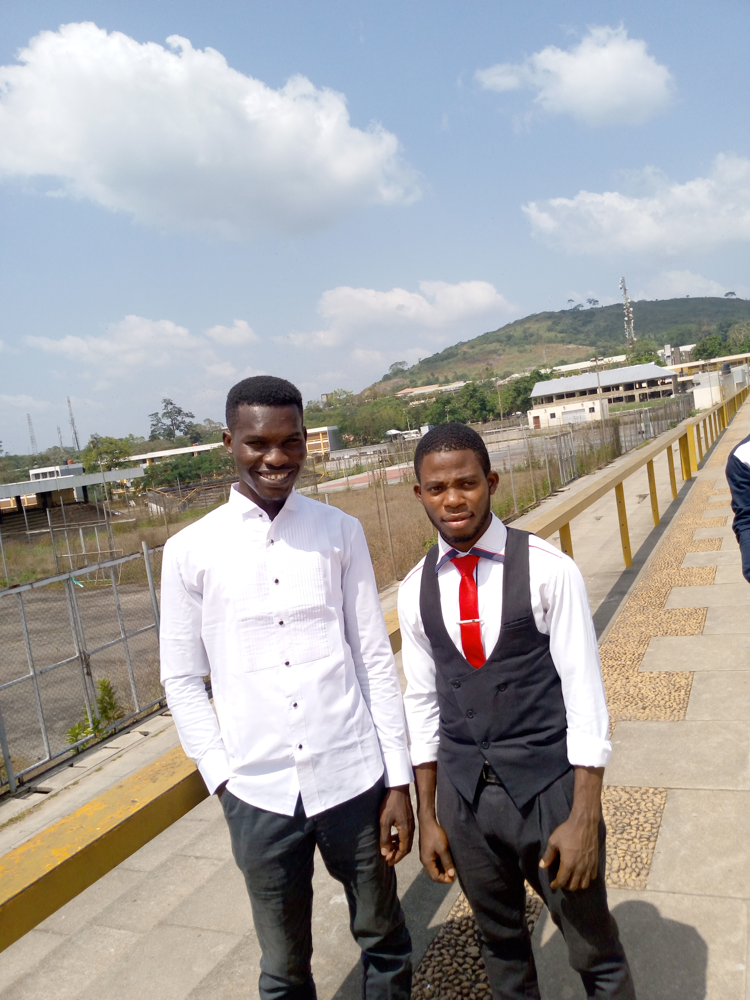
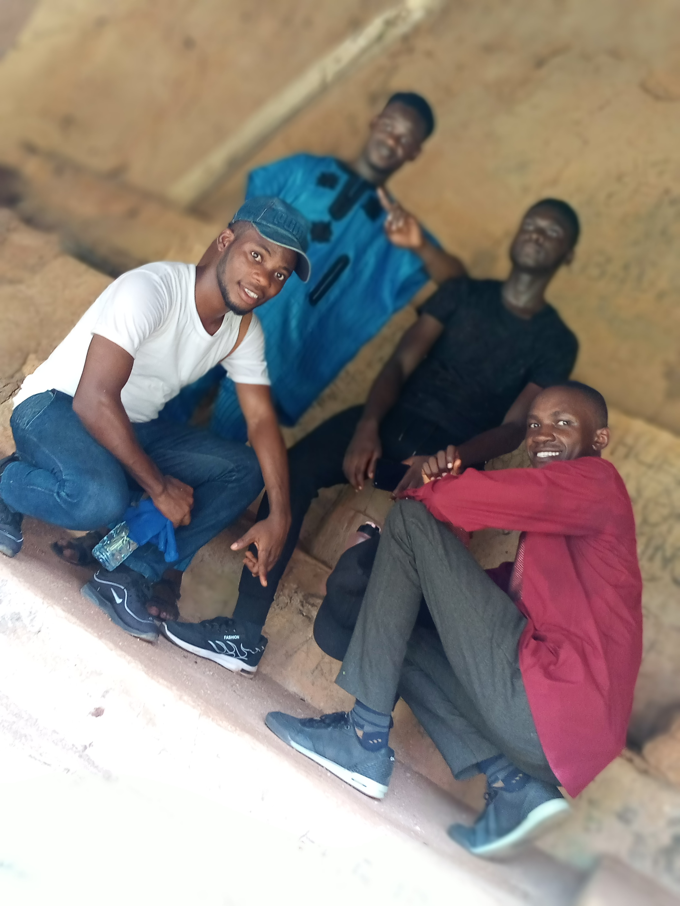
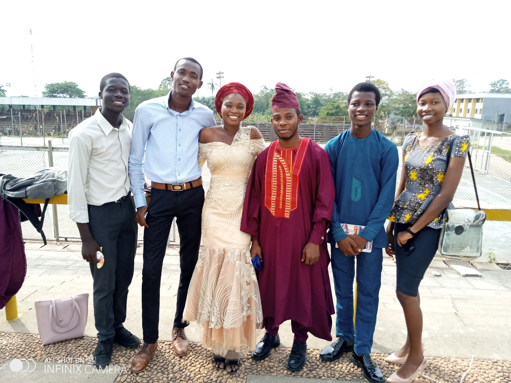
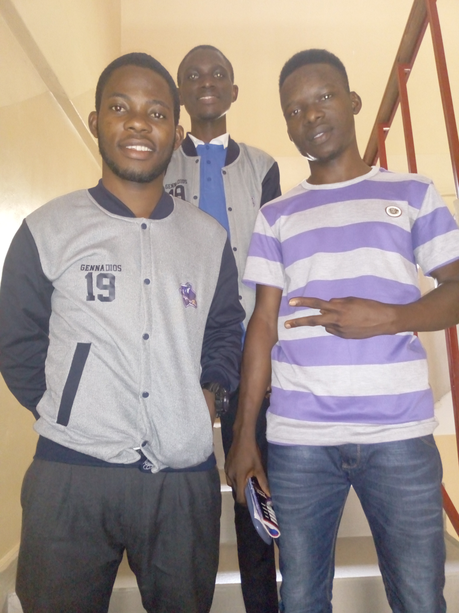

pictures with friends and family
25, Onikonga Association Avenue Ayobo Lagos State.
Phone Number: +2349068465720, Email:adekanmisamuel4@gmail.com
OBJECTIVE:
2004-2010: Secondary School Certificate
Royal comprehensive high school Modakeke-ife Osun State.
2013-2015:Osun State College of Education Ilesa osun State (OSCOED)
2015-2022:Bachelor of Science in Agricultural and Environmental Engineering
Obafemi Awolowo University, Ile-Ife Osun State.
2017:Sandel engineering Services: Plot 1&2, Balogun Layout, Aserifa Estate, Oppposite NDLEA offices, Old Ife Ibadan Road, ile-ife.
Job Description:Internship
Objective:
2018 – 2019:Niji Groups of Companies: Km 10, Komu Road, Ilero, Kajola Local Government, Oyo State Nigeria.
Job Description:Internship
Objective:
Good knowledge of AUTODESK Inventor, Data Science and Analytics introduction, prediction of Employee Turnover Using IBM Watson, Identify Potential Repeat Customers For Your Business Issued by IBM, Data Science Fundamentals Issued by IBM., Introduction to machine Learning, Python (programming language) Microsoft Office Suites, Project Management, Public speaking and Writing.
Served in the following positions
pictures with friends and family